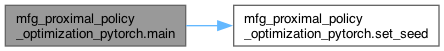
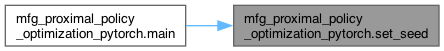

Functions | |
| set_seed (seed) | |
| main (unused_argv) | |
Variables | |
| FLAGS = flags.FLAGS | |
| default | |
| help | |
| False | |
Detailed Description
Runs mean field proximal policy optimaztion agents.
Function Documentation
◆ main()
| mfg_proximal_policy_optimization_pytorch.main | ( | unused_argv | ) |
Main function to run the experiment.
Definition at line 126 of file mfg_proximal_policy_optimization_pytorch.py.
127 """Main function to run the experiment."""
128
129 # Set the random seed for reproducibility
130 set_seed(FLAGS.seed)
131
132 # Set the device (in our experiments CPU vs GPU does not improve time at all)
133 # we recommend CPU
134 device = torch.device(
135 "cuda" if torch.cuda.is_available() and FLAGS.cuda else "cpu"
136 )
137
138 # Set the name of the experiment's folder
139 fname = "./mfppo_experiments/"
140
141 # Log the experiments
142 run_name = (
143 f"{FLAGS.exp_name}_{FLAGS.game_setting}_{FLAGS.optimizer}_num_update_epochs_"
144 " "
145 f" {FLAGS.update_epochs}_num_episodes_per_rollout_{FLAGS.num_episodes}_number_of_mini_batches_"
146 " "
147 f" {FLAGS.num_minibatches}_{time.asctime(time.localtime(time.time()))}"
148 )
149 log_name = os.path.join(fname, run_name)
150 tb_writer = SummaryWriter(log_name)
151 logging.basicConfig(
152 filename=log_name + "_log.txt",
153 filemode="a",
154 level=logging.DEBUG,
155 force=True,
156 )
157
158 # Console handler
159 console = logging.StreamHandler()
160 console.setLevel(logging.ERROR)
161 logging.getLogger("").addHandler(console)
162
163 logger = logging.getLogger()
164 logger.debug("Initialization")
165
166 tb_writer.add_text(
167 "hyperparameters",
168 "|param|value|\n|-|-|\n%s"
169 % "\n".join([f"|{key}|{value}" for key, value in vars(FLAGS).items()]),
170 )
171 # Create the game instance
172 game = factory.create_game_with_setting(
173 "mfg_crowd_modelling_2d", FLAGS.game_setting
174 )
175
176 # Set the initial policy to uniform and generate the distribution
177 uniform_policy = policy_std.UniformRandomPolicy(game)
178 mfg_dist = distribution.DistributionPolicy(game, uniform_policy)
179 env = rl_environment.Environment(
180 game, mfg_distribution=mfg_dist, mfg_population=0
181 )
182
183 # Set the environment seed for reproduciblility
184 env.seed(FLAGS.seed)
185
186 # Creat the agent and population policies
187 info_state_size = env.observation_spec()["info_state"][0]
188 num_actions = env.action_spec()["num_actions"]
189 agent = mfg_ppo_agent(info_state_size, num_actions).to(device)
190 ppo_policy = mfg_ppo_policy(game, agent, None, device)
191 pop_agent = mfg_ppo_agent(info_state_size, num_actions).to(device)
192
193 if FLAGS.optimizer == "Adam":
194 optimizer_actor = optim.Adam(
195 agent.actor.parameters(), lr=FLAGS.lr, eps=1e-5
196 )
197 optimizer_critic = optim.Adam(
198 agent.critic.parameters(), lr=FLAGS.lr, eps=1e-5
199 )
200 else:
201 optimizer_actor = optim.SGD(
202 agent.actor.parameters(), lr=FLAGS.lr, momentum=0.9
203 )
204 optimizer_critic = optim.SGD(
205 agent.critic.parameters(), lr=FLAGS.lr, momentum=0.9
206 )
207
208 # Used to log data for debugging
209 steps = FLAGS.num_episodes * env.max_game_length
210 episode_entropy = []
211 total_entropy = []
212 nash_con_vect = []
213 eps_reward = []
214 total_reward = []
215
216 for k in range(FLAGS.update_iterations):
217 for _ in range(FLAGS.update_episodes):
218 # collect rollout data
219 history = rollout(
220 env, pop_agent, agent, FLAGS.num_episodes, steps, device
221 )
222 # store rewards and entropy for debugging
223 episode_entropy.append(history["entropies"].mean().item())
224 eps_reward.append(history["rewards"].sum().item() / FLAGS.num_episodes)
225 # Calculate the advantage function
226 adv, returns = calculate_advantage(
227 FLAGS.gamma,
228 True,
229 history["rewards"],
230 history["values"],
231 history["dones"],
232 device,
233 )
234 history["advantages"] = adv
235 history["returns"] = returns
236 # Update the learned policy and report loss for debugging
237 v_loss = learn(
238 history,
239 optimizer_actor,
240 optimizer_critic,
241 agent,
242 num_minibatches=FLAGS.num_minibatches,
243 update_epochs=FLAGS.update_epochs,
244 itr_eps=FLAGS.itr_eps,
245 eps_eps=FLAGS.eps_eps,
246 alpha=FLAGS.alpha,
247 ent_coef=FLAGS.ent_coef,
248 max_grad_norm=FLAGS.max_grad_norm,
249 )
250
251 # Collect and print the metrics
252 total_reward.append(np.mean(eps_reward))
253 total_entropy.append(np.mean(episode_entropy))
254
255 print("Value_loss", v_loss.item())
256 print("iteration num:", k + 1)
257 print("Mean reward", total_reward[-1])
258
259 # Update the iteration policy with the new policy
260 pop_agent.load_state_dict(agent.state_dict())
261
262 # Update the distribution
263 distrib = distribution.DistributionPolicy(game, ppo_policy)
264
265 # calculate the exploitability
266 m = calculate_explotability(game, distrib, ppo_policy)
267 nashc = m["nash_conv_ppo"]
268 nash_con_vect.append(nashc)
269
270 # log the results to tensor board
271 tb_writer.add_scalar("initial_state_value", m["ppo_br/initial"], k + 1)
272 tb_writer.add_scalar("rewards", total_reward[-1], k + 1)
273 tb_writer.add_scalar("entorpy", total_entropy[-1], k + 1)
274 tb_writer.add_scalar("nash_conv_ppo", nashc, k + 1)
275 logger.debug(
276 "ppo_br: %s, and nash_conv: %s, reward: %s, entropy: %s",
277 m["ppo_br/initial"],
278 nashc,
279 total_reward[-1],
280 total_entropy[-1],
281 )
282 print(
283 "ppo_br: %s, and nash_conv: %s, reward: %s, entropy: %s"
284 % (m["ppo_br/initial"], nashc, total_reward[-1], total_entropy[-1])
285 )
286
287 # Update the environment distribution
288 env.update_mfg_distribution(distrib)
289
290 # if lower than upper_nash we save the weights and distribution
291 upper_nash = 300
292 if nash_con_vect[-1] < upper_nash:
293 # Save the distribution and weights for further analysis
294 filename = os.path.join(fname, f"distribution_{run_name}.pkl")
295 utils.save_parametric_distribution(distrib, filename)
296 torch.save(
297 agent.actor.state_dict(),
298 fname
299 + f"alpha_{FLAGS.alpha}, itr_eps_{FLAGS.itr_eps},"
300 f" eps_eps_{FLAGS.eps_eps}_agent_actor_weights.pth",
301 )
302 torch.save(
303 agent.critic.state_dict(),
304 fname
305 + f"alpha_{FLAGS.alpha}, itr_eps_{FLAGS.itr_eps},"
306 f" eps_eps_{FLAGS.eps_eps}_agent_critic_weights.pth",
307 )
308
309
References set_seed(), and to.
Here is the call graph for this function:

◆ set_seed()
| mfg_proximal_policy_optimization_pytorch.set_seed | ( | seed | ) |
Set the random seed for reproducibility.
Definition at line 117 of file mfg_proximal_policy_optimization_pytorch.py.
117def set_seed(seed):
118 """Set the random seed for reproducibility."""
119 np.random.seed(seed)
120 torch.manual_seed(seed)
121 torch.cuda.manual_seed(seed)
122 os.environ["PYTHONHASHSEED"] = str(seed)
123 print(f"Random seed set as {seed}")
124
125
Referenced by main().
Here is the caller graph for this function:

Variable Documentation
◆ default
| mfg_proximal_policy_optimization_pytorch.default |
Definition at line 43 of file mfg_proximal_policy_optimization_pytorch.py.
◆ False
| mfg_proximal_policy_optimization_pytorch.False |
Definition at line 81 of file mfg_proximal_policy_optimization_pytorch.py.
◆ FLAGS
| mfg_proximal_policy_optimization_pytorch.FLAGS = flags.FLAGS |
Definition at line 40 of file mfg_proximal_policy_optimization_pytorch.py.
◆ help
| mfg_proximal_policy_optimization_pytorch.help |
Definition at line 43 of file mfg_proximal_policy_optimization_pytorch.py.
Generated by